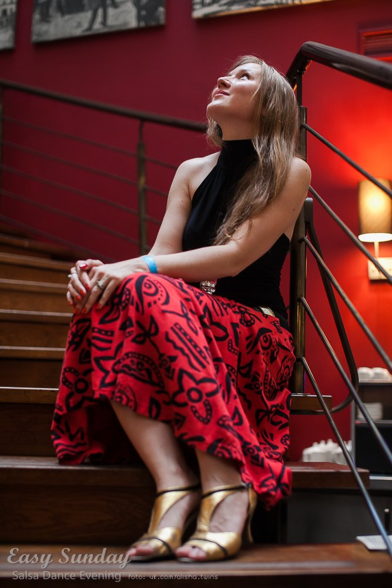
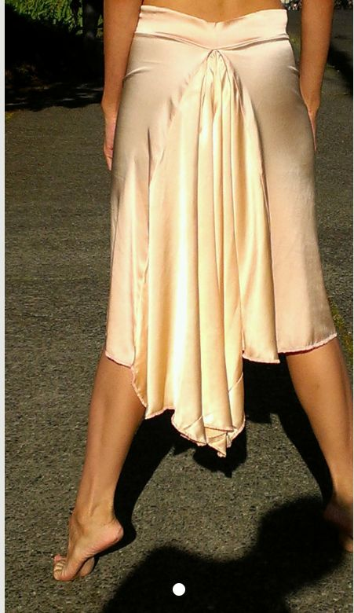
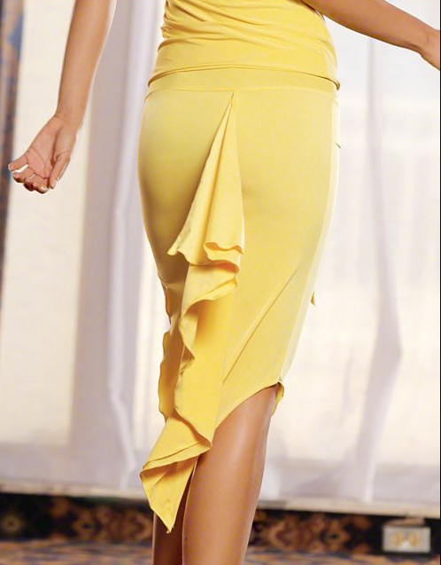

Зачем вообще нужны юбки и платья?
Мы так уже привыкли, что юбка – это парадно-выходная одежда или одежда для лета, что нет понимания, а зачем вообще нужно носить юбки, когда есть джинсы?
-
Сбор и удержание энергии.
Юбка специально создана для того, чтобы женщина могла собирать энергию от матушки-Земли. В брюках эта функция не предусмотрена, потому что они созданы для мужчин. Которые энергию берут не от Земли, а от Неба.
-
Женское гормональное здоровье.
Уже было много исследований о том, что джинсы и брюки плохо влияют на наши женские репродуктивные и гормональные функции.
-
Ощущение своей красоты и женственности.
Ни одни брюки не смогут подарить вам такого ощущения. Ощущение, что вы сексуальны и притягательны – да. Но женственность и женская красота – приходят вместе с платьями.
Или брюки, или женственность
Вот несколько занимательных цитат женщин, которые рассказывают об изменениях в своей жизни после отказа от брюк:
- Надевая юбку и туфли, я сразу замечаю, как меняется моя осанка и походка. Казалось бы, не такая большая перемена снаружи, и такой огромный сдвиг внутри. Всего лишь другая одежда, но ощущения очень и очень разные.
- Надев платье, сразу хочется и волосы в порядок привести, и макияж сделать. Это требует начать заботиться о себе. Требуется больше времени и сил потратить до того, как выйдешь из дома, но оно того стоит.
- Мужу очень нравлюсь я в платьях. И если раньше нужно было долго просить новый свитер, то сейчас он постоянно спрашивает – может быть, тебе купить еще одно платье? Или может быть, тебе нужны новые бусы?
- Я вообще стала меньше раздражаться, злиться, ныть, ругаться и испытывать другие неприятные чувства. Словно ситуаций для их проживания стало меньше.
- Мне стало проще просить. Просить о помощи, просить подарков, просить денег, просить внимания. Просто, по-девочковски, мило, с улыбкой…
- Мне стали уступать место в транспорте. Не потому, что я беременная или с ребенком. А потому что выгляжу, как женщина. И что удивительно – места уступают мужчины.
- Мне проще заниматься женскими делами. Одела платье – и к плите, на кухню, за уборку. Этот процесс проходит проще и с большим удовольствием.
- Стало гораздо проще развивать женские качества. Проще быть ласковой и доброй, когда на тебе легкий сарафан. И практически невозможно быть послушной и мягкой в грубой джинсе.
- Я вижу, как мной любуются на улицах. И мужчины, и женщины, и даже бабушки. Особенно, когда я иду, нет, плыву, в длинном сарафане и двумя детьми…
- Слишком мало на улицах женщин в юбках и платьях. Поэтому я действительно выделяюсь. Учитывая, что я ношу не короткие мини, а шикарные длинные юбки, которые так приятно шелестят и драпируются при ходьбе.
Мода осень 2017
Красное платье
Красный — безусловный фаворит осенне-зимнего сезона.
А красное платье — главное оружие первых модниц.

Нюд
Носить одежду модного цвета кожи человека могут позволить себе только обладательницы идеальных тел. Готовиться лучше прямо сейчас.
Желтый
От неоново-лимонного до мягкого цвета желтой осенней листвы — осень 2017-го обещает быть солнечной.
